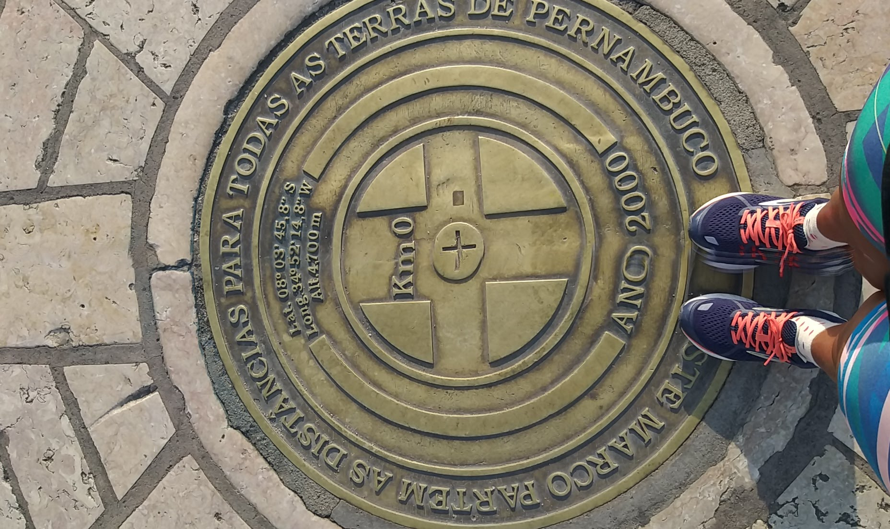

A cidade do Recife realmente é uma das mais famosas do Nordeste, em Pernambuco. A praça Rio Branco conhecida como, bairro no Recife, Recife antigo ou Marco zero, é onde converge culturas, raças, línguas, esportes, lazeres e networkings. O local fica próximo ao Porto do Recife e abriga o marco zero da cidade que são feitas todas as medidas oficiais de distâncias rodoviarias locais, margeada pelo encontro dos rios Capibaribe e Beberibe com o Oceano Atlântico.
